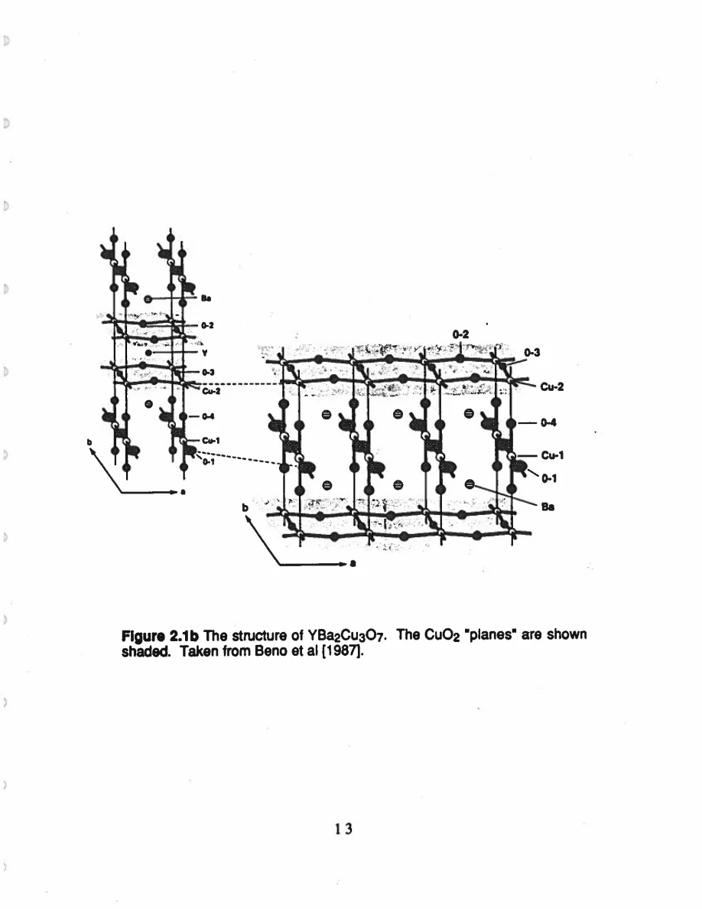
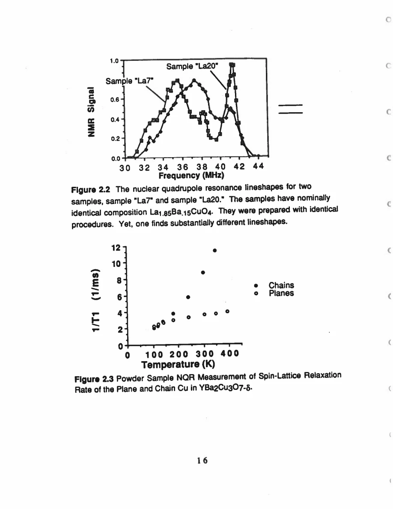

Pennington · supplied source 1989 · chapter unit
1. The normal-state puzzle and two Cu environments
The thesis first establishes which microscopic degrees of freedom each Cu nucleus can probe.
The question: Why separate planes and chains before discussing superconductivity?
Before you start: the terms you need
- Plane Cu / chain Cu: the two crystallographic copper sites in YBCO
- EFG: electric field gradient, which couples to a nuclear quadrupole moment
- Magnetic shift: the field-proportional frequency change after quadrupole contributions are separated
- W₁: the thesis’s elementary satellite population-transition rate, not automatically 1/T₁
- Redfield contribution: echo decay generated by the fluctuating fields also responsible for population recovery
- Transferred hyperfine coupling: a nuclear spin senses electronic spins through orbital mixing or intervening atoms
See → explain → check
Follow the idea in 2 pictures.
Picture 1 / 2
Two sites in one unit cell
Look for: Identify the special direction for each local environment.
Swipe across the picture to read every label, or enlarge it below.
- Plane Cu(2)
- Chain Cu(1)
Coordination map, not a drawing of static magnetic order.
The planes and chains need separate resonance assignments.
Picture 2 / 2
Charge-counting alternatives
Look for: Compare the formal assignment with the EFG-based model.
Swipe across the picture to read every label, or enlarge it below.
- Formal bookkeeping
- Source EFG model
Ionic labels summarize models in a covalent solid.
Changing Cu³⁺ to Cu²⁺ leaves an extra oxygen-related hole.
Explain it back.
Try answering aloud before opening the explanation.
Why does a direction matter when the chemical formula is fixed?
The local orbital and hyperfine responses are tensors; a and c fields can sample different components.
Does the historical pairing discussion establish the mechanism?
No. It motivates measurements of the normal state and discusses then-available constraints.
Go deeper Follow the full argument
Microscopic motivation
The thesis begins from a historical puzzle: YBCO superconducts near 90 K, but its normal-state copper response is unlike the simple-metal starting point familiar from conventional superconductivity. Pennington’s task is to characterize that normal state microscopically. The experiment therefore concentrates on directional nuclear observables rather than deriving a pairing mechanism. A crystal of roughly 1 mg allows a field to be placed along known directions; doing so prevents a powder’s orientation average from washing out the tensors. The source uses prior NQR and superconducting-state results as context, but the new direction-resolved results form a narrower experimental core. Its introduction compares BCS phenomenology, coherence peaks and shift suppression with evidence available in 1989. Treat these passages as the question that motivated the work. An absent coherence peak or a suppressed spin shift is a constraint on models; it does not by itself identify a unique interaction responsible for pairing.
PDF p. 13 · PDF p. 14 · PDF p. 15 · PDF p. 21 · PDF p. 22 · PDF p. 23
Structure before spectra
The CuO₂ planes contain the Cu(2) site. Its nearest-oxygen coordination is approximately fourfold about c, with an additional bridging oxygen giving a five-neighbor local environment. The Cu(1) site lies in the Cu–O chains running along b and is coordinated by chain and bridge oxygens, with an approximate symmetry about a. These are different local environments inside one compound, not two separate sample phases. The lattice constants a and b differ only slightly, so real crystals can be twinned: domains interchange the two in-plane directions. Later, a field in the plane therefore samples a- and b-oriented domains at once. This explains why a spectrum can have two chain peaks while the plane central peaks overlap. The diagrams should be read as site-and-axis maps; they do not establish whether a local electronic spin is static, fluctuating or itinerant.
Charge counting supplies a question, not an answer
For nominal YBa₂Cu₃O₇, the closed-shell assignments Y³⁺, Ba²⁺ and O²⁻ leave total Cu charge+7. A simple bookkeeping choice is two plane Cu²⁺ plus one chain Cu³⁺. The author tests this against EFG tensors and obtains Cu²⁺-like single-hole configurations at both sites instead. One additional hole per unit cell then belongs to oxygen-related states in that model. The same chemical formula therefore allows different microscopic distributions of orbital charge. The thesis also shows two nominally identical La₁.₈₅Ba₀.₁₅CuO₄ preparations with different NQR lineshapes, for which it lacks a complete theory. This contextual example warns against treating a formula as a complete description of a sample’s local resonance environment. Learn the robust structural distinction first, then ask how each measured tensor constrains the electronic model.
Translate the mathematics Essential equations and their meaning
Read the evidence Guided original source pages

PDF p. 25

PDF p. 28
What the evidence supports—and where it stops
- The introduction’s field-status claims are explicitly historical.
- The LBCO context has unexplained sample-dependent lineshapes; do not turn it into a complete model.
Source version, reading coverage and preservation
All 146 scanned pages rendered and locally OCR-recognized with Windows.Media.Ocr. Research prose of PDF 13–139 read in full; source-specific formulas and selected complete page figures inspected individually. PDFpage=printedpage+12.
Reviewed body pages: 13, 14, 15, 16, 17, 18, 19, 20, 21, 22, 23, 24, 25, 26, 27, 28, 29, 30, 31, 32, 33, 34, 35, 36, 37, 38, 39, 40, 41, 42, 43, 44, 45, 46, 47, 48, 49, 50, 51, 52, 53, 54, 55, 56, 57, 58, 59, 60, 61, 62, 63, 64, 65, 66, 67, 68, 69, 70, 71, 72, 73, 74, 75, 76, 77, 78, 79, 80, 81, 82, 83, 84, 85, 86, 87, 88, 89, 90, 91, 92, 93, 94, 95, 96, 97, 98, 99, 100, 101, 102, 103, 104, 105, 106, 107, 108, 109, 110, 111, 112, 113, 114, 115, 116, 117, 118, 119, 120, 121, 122, 123, 124, 125, 126, 127, 128, 129, 130, 131, 132, 133, 134, 135, 136, 137, 138, 139. Acknowledgments and biography are not teaching material. Bibliography not independently verified against external publications. Mathematical derivations are summarized at final-result level; not every algebraic line independently reconstructed.
Source SHA-256: 85b6d3c8d20ccc23476bf72473860248d5228e16892afefa8dec6c7054d43c26. Original file bytes preserved locally, and in this room’s original download.
Thesis - Pennington - 1989 - Single crystal NMR of high temperature superconductors.pdf